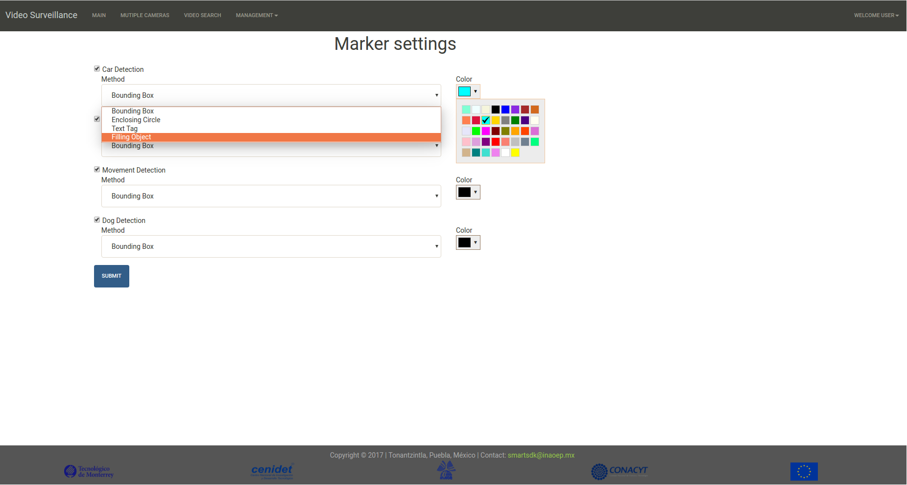

Manual of the Smart Security Application
Requirements
For an optimal performance, Google Chrome browser is recommended.
Interface
The Graphical User interface was build using the Web2Py Framework, which allows the fast development of Web Applications with Python language as its core. This framework uses the MVC (Model-View-Controller) architectural pattern to build up web applications.
Current prototype offers five differents views to the user: Login, Main, Multiple Cameras, Search and Management.
User registration
Login page forbids the access of unauthorized users to the system, blocking both view and management privileges. In order to be a user of the system a sign up process is required by the system administrator.
To register a new user:
-
Clik on the
Loginmenu and select the theSign upoption (right upper corner of the Login view). -
In the
Loginview we must indicate the user name and the password of the new user.

The information is sent to the system administrator to authorize the acces to the new user.
Sign in
Once that we are a registered user, we are able to acces to the system using also the Login view.
To acces the system:
-
Click on the
Loginoption and select the theLog inoption (right upper corner of theLoginview). -
In the
Loginview we must indicate the user name and the password of the user.
Recording video by motion
By default the system is able to automatic video recording by motion detection in the scene.
Visualize a single camera
In order to visualize a specific camera:
-
Click on the
Maintab -
When the
Mainview is visualized, in the bottom scrollbar select the camera.

Visualize the last events detected (In progress).
Every activity detected by the system is reported and visualized to the user. To see the last activity detected:
-
Click on the
Maintab. -
Go to the
Last Activitytextbox (right side of the Main View ).
Vizualize multiple cameras
For a general overview, the system is capable to show all the cameras in the Multiple Cameras View.
-
Click on the
Multiple Camerastab. -
All the cameras registered in the system are visible.

Search
The system allows the user to search segments of video associated with events detected, both automatic detections and manual recordings. Two main criteria define the search: by annotation or by image file containing a face.

Searching by Annotation (Filters)
This search option contains a form to search by event type (Person or vehicle detected), by date of detection, and/or by the id of the camera in which the event was detected.
In order to search videos by Annotation:
-
Click on the
Searchtab. -
Select the
Filtersradio button. -
On the
Searchview define the search criteria. -
Event Type: Select the type o event that you want to search. If no one option is selected all type of events will be shown. -
Camera id: Select the camera id desired. -
Date: Two calendars are available in order to define a date criteria (Start and End). -
Once the criteria is defined, click on the
Filter Eventsbutton. -
The search result is visualized on the bottom textbox.
Searching by Image File (Face)
This search option allows to the user search a person by face.
In order to search a person (by face) in the video repository:
-
Click on the
Searchtab. -
Select the
Faceradio button. -
Click on the
Filebutton. -
Select the file containing the face of the person to search.
-
Once the file is selected, click on the
Filter Eventsbutton. -
The search result is visualized on the bottom textbox.
Settings

To configure how the system higlight the event detected on the streaming:
-
Click on the
Managementmenu. -
Select the
Filtersoption. -
In the
Configure Filterssection, select theEvent,Text tagandColordesired to visualize on the streaming when the event is detected. -
Click on the
Submitbutton.
Cameras management

Add a new camera
-
Click on the
Managementmenu. -
Select the
Camerasoption. -
In the
Cameras Managementsection, click on theAdd Camerabutton. -
To indicate the
idof the new camera. -
To indicate the rstp
urlof the new camera. -
Click on the
Submitbutton.